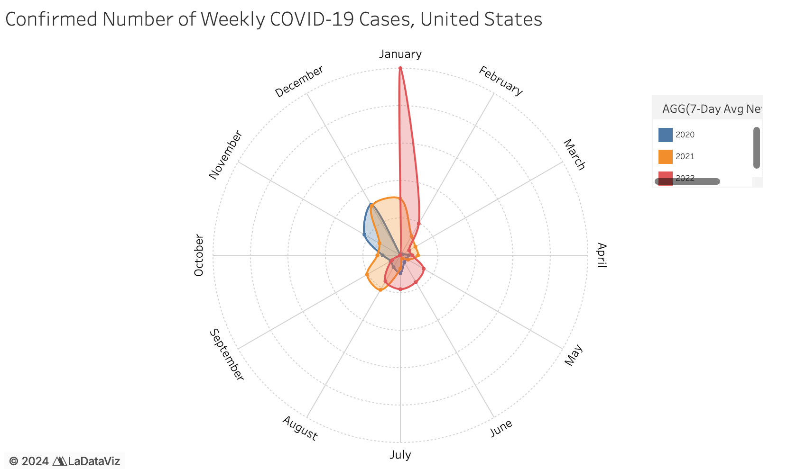
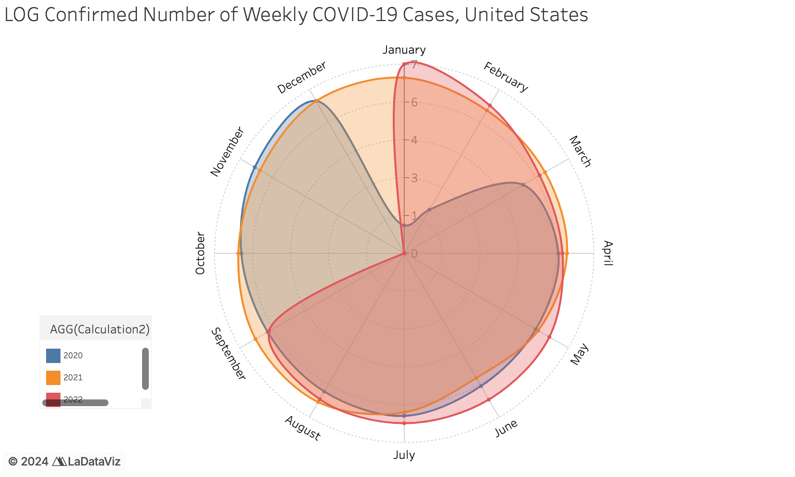
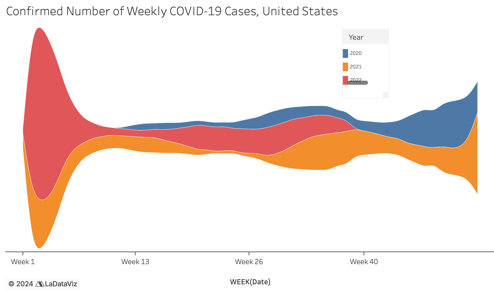

February 25, 2025
I think there are a couple things that the visualization does well. For one, this manner of visualizing COVID-19 data is much more engaging than the typical bar charts and line charts we were often inundated with during the pandemic and likely caught the interest of viewers based on visual interest alone. The data is shown in a more consolidated form appropriate for a website or newspaper, as opposed to stretching out the years across a linear axis, so viewers can more readily get information in one image. Viewers can see the distribution and pattern of COVID-19 cases and compare it across the same time each year without having to scroll / look across a long visualization. Given that the visualization appeared in an op-ed about the potential dangers of a new COVID variant appearing during the winter, when COVID-19 transmissions tended to be highest, the data clearly reveals trends in the data based on season. The labelled months help roughly divide the data into seasons, making it clear that April to July tends to have the lowest number of cases across the year. The visual helps underscore Dr. Shaman’s intended message of the threat of Omicron and provides motivation for his writing about the future of the pandemic and projections of infections. Finally, it’s visually legible, with appropriate spacing given to each year and between each month so annotations and labels are clearly visible.
However, I believe there are several issues with the visualization that make it more confusing than needed. One of the most glaring issues is that it is not immediately obvious how to read the visualization given the novel shape. As such, the target audience (the everyday American who reads the NYT) might not be able to understand the message of the visualization at first glance. The combination of the spiral shape and use of size to represent cases makes it hard to actually get a sense of the scale, since the highlight that represents cases wraps around both sides of the line. In addition, because the highlight is not discretely broken up across weeks, it makes it even harder to discern actual numbers across the pandemic. 0-150k cases is also quite a wide range, so it’s not easy to convert the size of the highlight to actual numbers. Viewers only get a very general sense of case trends, but don’t have a good sense of the scale / concrete numbers of US cases. In general, the viewer has to fill in a lot of the gaps on their own. For example, not all of the months are labelled so the viewer has to figure out the tick marks for the other months. Viewers may wonder about other factors besides season / time of year that may be affecting the presented trends — annotations pointing out when new variants emerged, when vaccine rollouts began, or when certain mandates were put in place could provide additional information, instead of making the viewer try to remember what happened in regards to COVID over the past 2 years (which, given the pandemic fatigue by 2022, was probably not very much!). Another way annotation could have been used was to call out certain important numbers (eg. when new cases were lowest and highest and why). Finally, if Dr. Shaman’s goal was to emphasize how important it was to take steps against the new Omicron variant, I think he could have underscored this by a) explicitly calling out the January 2022 numbers and pointing out how much higher they were compared to previous years, b) showing the impact of vaccines on new cases, and / or c) including and comparing the number of deaths due to COVID.

For my visualization, I wanted to stick with the takeaway I got from Dr. Shaman’s original visualization, which was about seasonal trends and the concerning transmissibility of the Omicron variant. Even though I originally wanted to have a more creative visual format, some experimentation (see Reflection section) yielded less effective and harder to read visualizations. Since the original visual was targeted for a general audience, I decided to apply Occam’s razor and go with the most interpretable visual. I decided to include small multiples of both cases and deaths; I hoped that viewers would be able to get a sense of how vaccines helped prevent some deaths, if not all cases, over time. I think the medium of a stacked area chart helps people easily compare proportions across the same time. For both charts, I calculated the 7 day average not only because this was used in Dr. Shaman’s visual but also because this seemed to be best practice in epidemiology / public health (also see Visualization 1 bullet points). I used the simple mark of color to differentiate between years in both the cases and deaths charts. I also added some simple annotations to help readers get a sense of what was happening throughout the pandemic. However, it’s important to note that because I was taking the 7 day rolling average, the axis is missing monthly labels so viewers may get a general sense of time and seasons across the year but it’s not as explicit as it could be. Also, in the deaths chart, the 2021 area is stuck behind the 2022 curve, making it hard to see (it’s a little easier to isolate for it in the interactive Tableau version, of course). I also think that because line charts were so utilized in the pandemic, we lose the severity of the lives and experiences lost as a result of COVID — data visualizations can only do so much to encompass the damage done by the pandemic.
The lack of creativity aside, I do think my critiques in Step 2 did help guide my approach for my final visualization. I realized that for this visualization, it was important to properly contextualize and annotate the data in order to communicate the overall message of sustained pandemic awareness.
I actually experimented with some of the more visually creative potential visualizations before landing on a simple area chart. When I tried a radar chart (I used a Tableau viz extension), I ran into the issue that I foresaw in my bullet points, which was the overlapping colors / areas. There was also a huge spike in early 2022 with as many as 6 million new cases a day, which made the relatively less extreme numbers of 2020 and 2021 very hard to notice, let alone read. A log transformation of cases was both unhelpful in the new visualization and also not as easily interpretable.
 I also tried a stream chart, which displays values over a varying baseline. Though it looked really nice, it’s not exactly the most intuitive format because the areas are in proportion to each other. Someone reading quickly might think interpret the entire stacked area incorrectly. Also, because there’s no scale, this visual is better off as an interactive piece rather than a static one.
As I mentioned before though, I do wish there was a way to emphasize the cost of the pandemic on American lives — perhaps an interactive / animated visual could better tell a narrative on COVID-19’s effects.